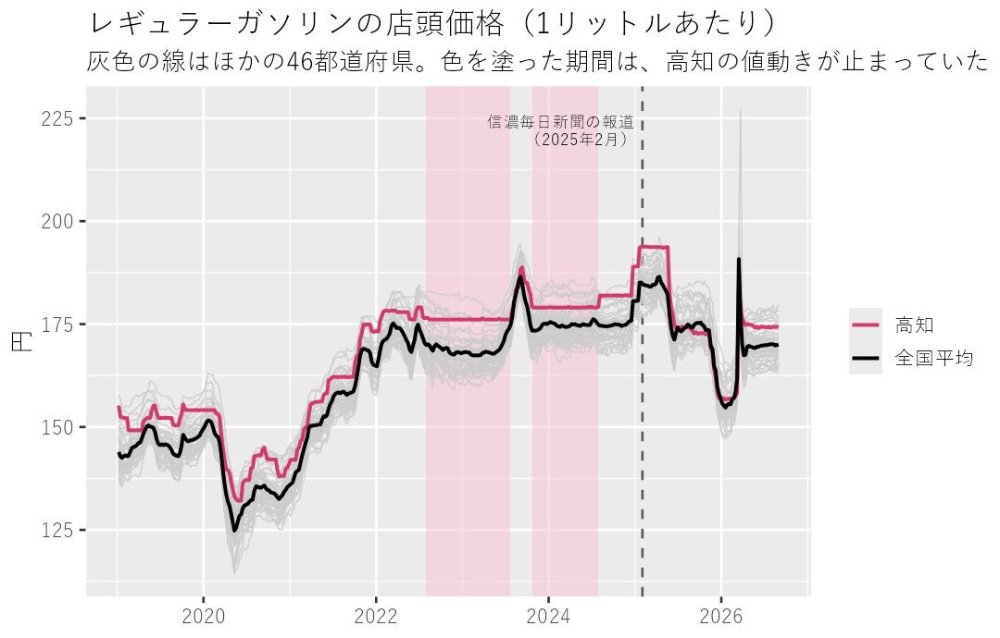
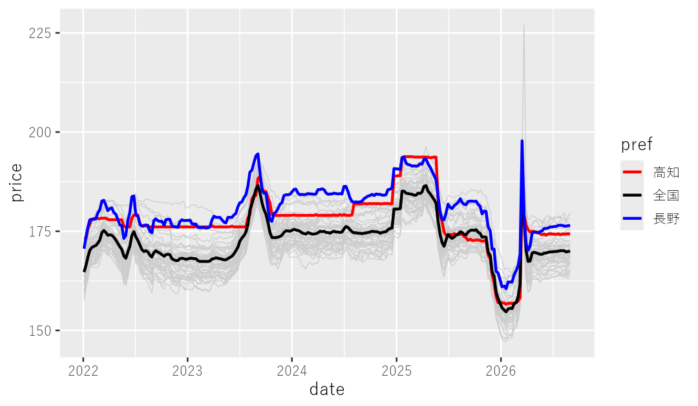
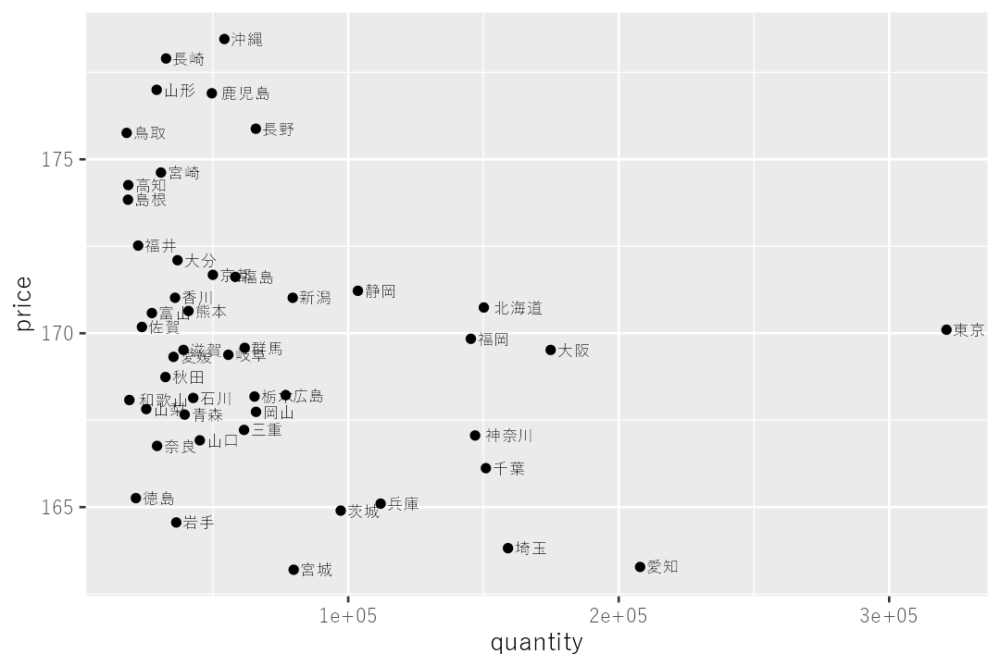

実践編
ガソリン価格の不自然な動きを見つける
高知県のガソリンスタンドは、看板に出す価格を「暗黙の了解」でそろえていたそうです。ここまでに覚えた関数を使えば、こういう発見がわりと簡単にできてしまいます。
第1部と第2部で、データを読み込んで、加工して、グラフにするところまでを一通りやりました。ただ、人口のデータをいじっているだけだと、「で、これで本当に記事が書けるの？」という気もしてくるかと思います。
この章では、私が実際に記事化につなげた分析を、最初から最後までお見せします。題材はガソリンの値段です。
特別な道具は必要ありません。select()、filter()、mutate()、group_by()、left_join()、ggplot()。これまでの章で覚えたごくシンプルな関数を組み合わせるだけでOK。それを実感してもらうのが目的です。
何が分かったのか
記事はこれです。
ガソリン看板価格で「暗黙の了解」 高知の関係者証言、独禁法抵触か（朝日新聞デジタル）
ガソリン価格の推移を都道府県ごとに分析したところ、高知県では何カ月にもわたってほとんど動きがない時期が複数ありました。ほかの都道府県ではたえず細かく上下していたのに、です。関係者に取材すると、多くの店が看板に出す価格を「暗黙の了解」でそろえていたとの証言が得られました。専門家にも取材すると、独占禁止法にふれる可能性があるとのことでした。
この章で扱うのは、このうちのデータの部分です。データから何が見えたのかを、グラフで見てみましょう。

全国平均と比べてずっと高い。値段の動きが極端に少ない。疑惑報道のあとに急に下がった。なかでも二つめ、灰色の細い線が上下に波打っているなかで、高知の赤い線だけが真っ平らな時期があることは、ひと目で分かりました。これが記事の出発です。
Rで確かめていきましょう。
データを用意する
使うパッケージは、tidyverseとreadxlです。
library(tidyverse)
library(readxl)読み込んで整える
まずは店頭価格のファイルから「レギュラー」のシートを読み込みます。シートの名前で指定するやり方は10章でやりました。
read_excel("data/260902s5.xlsx", sheet = "レギュラー")Excelで開いてみると分かりますが、このシートは、1行が1回の調査（1週間）で列が都道府県、という横長の表になっています。いちばん左の列は表の題と注記を入れるための列で、データは入っていません。その右が「調査日」。さらにその右に「全国」「北海道局」「青森」「岩手」……と続きます。
気をつけたいところがいくつかあります。
- 列のラベルに空白が入っている。「全 国」「青 森」「愛 媛」のように、半角の空白がたくさん入っていたり、全角の空白が入っていたりする
- 都道府県のほかに、「東北局」「関東局」のような地域のまとめが混じっている。北海道と沖縄は「北海道局」「沖縄局」という名前になっている
- 右の端には、「（うちガソリン税）」と「消費税率」という、価格ではない列がある
これを、日付と都道府県と価格の3列だけの、縦長のtibbleに整えます。コードはこうです。
gas <- read_excel("data/260902s5.xlsx", sheet = "レギュラー") %>%
select(-1) %>% # 注記の列を捨てる
rename(date = 調査日) %>%
pivot_longer(cols = -date, names_to = "pref", values_to = "price") %>%
filter(!is.na(price)) %>% # 価格のない行を捨てる
mutate(date = as.Date(date),
pref = str_remove_all(pref, "[ ]")) %>% # 空白を取る
filter(!pref %in% c("（うちガソリン税）", "消費税率")) %>%
mutate(pref = if_else(pref == "北海道局", "北海道", pref),
pref = if_else(pref == "沖縄局", "沖縄", pref)) %>%
filter(!str_detect(pref, "局")) # 地域のまとめを捨てる長いコードに見えますが、これまで使った関数ばかりです。何をやっているかは、ご自身で確かめてみてください。
一つだけ初めて出てきたのが、as.Date() の関数。read_excel() は「調査日」の列を、日付に時刻までついた形（<dttm>）で読み込みます。時刻は要らないので、日付だけの形（<date>）に変えています。データ型を変える関数の仲間で、as.double() の日付版だと思ってください。
できたものを見てみましょう。
# A tibble: 55,785 × 3
date pref price
<date> <chr> <dbl>
1 1990-08-27 全国 121
2 1990-08-27 北海道 121
3 1990-09-03 全国 121
4 1990-09-03 北海道 121
5 1990-09-10 全国 122
6 1990-09-10 北海道 121
# ℹ 55,779 more rows55,785行の、縦長のtibbleができました。1990年8月27日の調査では、全国の平均が1リットル121円だったことが分かります。
都道府県がちゃんとそろっているかも確かめておきます。重複を除いて一覧にする distinct() を使います。
gas %>%
distinct(pref)# A tibble: 48 × 1
pref
<chr>
1 全国
2 北海道
3 青森
4 岩手
5 宮城
6 秋田
# ℹ 42 more rows48行。47都道府県と全国で、ちょうどです。
2025年1月のランキング
まずは、どこが高いのかを見てみます。2025年2月、信濃毎日新聞が、長野県のガソリン価格のカルテル疑惑を報じました。その直前にあたる2025年1月の平均価格で並べてみましょう。
gas %>%
mutate(year = year(date), month = month(date)) %>%
filter(year == 2025, month == 1) %>%
group_by(pref) %>%
summarize(price = mean(price)) %>%
arrange(desc(price))# A tibble: 48 × 2
pref price
<chr> <dbl>
1 長野 192.
2 高知 191.
3 鹿児島 189.
4 山形 189.
5 長崎 188.
6 鳥取 188.
7 大分 187.
8 宮崎 187.
9 島根 187.
10 沖縄 185.
# ℹ 38 more rowsyear() と month() は、日付から年と月を取り出す関数です。lubridateという、日付を扱うためのパッケージに入っています。このパッケージは基本、tidyverseの中に入っていますが、tidyverseが古いバージョンだと入っていないこともあります。そのときは library(lubridate) と書き足してください。
あとは、7章でやった group_by() と summarize() で都道府県ごとに平均をとって、大きい順に並べただけです。
1位は長野。疑惑が報じられたところですね。でもそのすぐ下、2位に高知がいます。
折れ線グラフで眺める
では、価格の推移を示すグラフを描きましょう。47都道府県と全国、合わせて48本の線を引くことになります。14章で、色分けは数色までにしよう、注目したいものだけに色をつけてあとは灰色にしよう、という話をしました。ここではそれを折れ線でやります。
gas %>%
filter(date >= "2022-01-01") %>%
ggplot() +
geom_line(aes(x = date, y = price, group = pref),
color = "grey80", linewidth = 0.3) +
geom_line(data = gas %>% filter(date >= "2022-01-01", pref %in% c("長野", "高知", "全国")),
aes(x = date, y = price, color = pref),
linewidth = 1) +
scale_color_manual(values = c("長野" = "blue", "高知" = "red", "全国" = "black"))
geom_line() を2回重ねているのがポイントです。
1回目は48本全部を灰色の細い線で描いています。
2回目はdata = で、描くデータを高知・長野・全国の三つだけに差し替えています。こうすると、ggplot() に渡したデータとは別のデータで線を描けます。この三つを太い線で、color = pref で色分けしながら、灰色の線の上に重ねているわけです。
最後の scale_color_manual() は、どれを何色にするかを自分で決める関数です。何も指定しないとggplotが勝手に色を選びますが、ここでは高知を赤、長野を青、全国を黒にしています。
本当に動いていないのか
グラフで見ると平らです。でも念のため、数字でも確かめておきましょう。
2022年8月から2023年7月下旬までの期間について、いちばん安かったときといちばん高かったときの差を都道府県別にとってみます。
gas %>%
filter(date >= "2022-08-01", date <= "2023-07-24") %>%
group_by(pref) %>%
summarize(weeks = n(),
min = min(price),
max = max(price)) %>%
mutate(range = max - min) %>%
arrange(range)# A tibble: 48 × 5
pref weeks min max range
<chr> <int> <dbl> <dbl> <dbl>
1 高知 50 176. 176. 0.400
2 熊本 50 166. 171. 4.90
3 長崎 50 177. 183. 5.70
4 鹿児島 50 176. 182. 6.10
5 三重 50 166. 173. 6.5
# ℹ 43 more rows50週のあいだ、高知の価格の上下の幅は、わずか0.4円でした。ずっと176円台です。2番目に動きが小さかった熊本でも4.9円。ほかの都道府県はそれより大きく動いています。
期間を2023年10月下旬から2024年7月までにして、同じことをやってみます。filter() の日付を変えるだけです。
gas %>%
filter(date >= "2023-10-23", date <= "2024-07-29") %>%
... # ここから下は上と同じ# A tibble: 48 × 5
pref weeks min max range
<chr> <int> <dbl> <dbl> <dbl>
1 高知 40 179 179. 0.200
2 熊本 40 172. 174. 1.70
3 福島 40 175. 177. 2
4 宮崎 40 178. 180. 2.10
5 三重 40 172. 175 2.5
# ℹ 43 more rows40週で、幅は0.2円。こちらはずっと179円台です。2番目の熊本は1.7円でした。
全国の平均が細かく上下していた期間に、高知だけが、ほぼ1円も動いていない。「平ら」は錯覚ではありませんでした。
ちなみにこの二つの期間それぞれの平均価格では、高知は47都道府県のなかで5位と7位。値段が動かなかっただけでなく、高いところで止まっていたことになります。
販売量が少ないから高いのか
ところで、ガソリン価格が高いところでは定番の説明があります。その一つが、「わが地域ではガソリンの販売量が少ない。薄利多売で稼げないから、単価を上げるしかない」というものです。
実際はどうでしょうか。石油連盟の販売量のデータで確かめましょう。
gas_quantity <- read_excel("data/paj-07_20261102.xls", sheet = "202606", skip = 4) %>%
select(...2, `数 量...3`) %>%
rename(pref = ...2, quantity = `数 量...3`)# A tibble: 56 × 2
pref quantity
<chr> <dbl>
1 北海道 150142
2 青森 39544
3 岩手 36434
4 宮城 79847
5 秋田 32428
6 山形 29190
# ℹ 50 more rowsこのシートは、上の4行が表の題などなので skip = 4 で飛ばしています（4章）。そのうえで、都道府県名の入った2列目と、揮発油（ガソリン）の数量の入った3列目だけを取っています。単位はキロリットルです。
ガソリン価格の2026年6月の平均と、left_join()（11章）でくっつけて、散布図にします。
gas %>%
mutate(year = year(date), month = month(date)) %>%
filter(year == 2026, month == 6) %>%
group_by(pref) %>%
summarize(price = mean(price)) %>%
left_join(gas_quantity, by = join_by(pref)) %>%
filter(pref != "全国") %>%
ggplot() +
geom_point(aes(x = quantity, y = price)) +
geom_text(aes(x = quantity, y = price, label = pref), hjust = -0.2)
geom_text() は、点の代わりに文字を置く関数です。label = pref で、置く文字を都道府県名にしています。hjust = -0.2 は、文字を点の少し右にずらす指定です。
グラフの左のほうを見てください。高知は販売量が全国で3番目に少ない県です。いちばん少ない鳥取、2番目の島根も価格は高めで、販売量が少ない県が高くなりやすい傾向は確かにありそうです。
ただ、販売量が同じくらいの和歌山や徳島は、ずっと安いところにいます。販売量が少ないからといって、必ず高くなるとは言えません。
製油所から遠いから高いのか
二つめの説明は、「製油所から遠いので、運ぶのにお金がかかる。だから高くなる」というものです。
これを確かめるのに、灯油を使います。灯油はガソリンと同じく製油所から運ばれてきます。運ぶ費用のせいで高いなら、灯油も同じように高くなるはずです。だとすれば、ガソリンと灯油の値段の差をとれば、運ぶ費用の効果はキャンセルできるだろう、という考え方です。
灯油の店頭価格は、同じファイルの「灯油店頭」というシートに入っています。読み込み方はガソリンと同じです。
kerosene <- read_excel("data/260902s5.xlsx", sheet = "灯油店頭") %>%
select(-1) %>%
rename(date = 調査日) %>%
pivot_longer(cols = -date, names_to = "pref", values_to = "kerosene_price") %>%
filter(!is.na(kerosene_price)) %>%
mutate(date = as.Date(date),
pref = str_remove_all(pref, "[ ]")) %>%
filter(pref != "消費税率") %>%
mutate(pref = if_else(pref == "北海道局", "北海道", pref),
pref = if_else(pref == "沖縄局", "沖縄", pref)) %>%
filter(!str_detect(pref, "局")) %>%
mutate(kerosene_price = kerosene_price / 18)価格の列の名前は、あとでガソリンの price と並べたときに区別できるよう、kerosene_price にしました。また、灯油価格はポリタンク一つ分の18リットルあたりで載っているので、18で割って1リットルあたりに直しています。
これをガソリンの価格とくっつけて、差の大きい順に並べます。日付は信濃毎日新聞の報道直前、2025年2月3日の調査にしました。
gas %>%
left_join(kerosene, by = join_by(date, pref)) %>%
filter(date == "2025-02-03") %>%
mutate(diff = price - kerosene_price) %>%
arrange(desc(diff))# A tibble: 48 × 5
date pref price kerosene_price diff
<date> <chr> <dbl> <dbl> <dbl>
1 2025-02-03 山形 191. 122. 68.3
2 2025-02-03 長野 192. 125. 67.6
3 2025-02-03 高知 194. 129. 64.4
4 2025-02-03 宮城 184. 122. 61.8
5 2025-02-03 石川 187 126. 61.3
6 2025-02-03 大分 189 128. 61.2
7 2025-02-03 福島 186. 125. 61.1
8 2025-02-03 長崎 192 131 61
# ℹ 40 more rows今度は日付と都道府県の二つの列で突き合わせています（11章）。ガソリンも灯油も同じ日に調査しているので、これでぴったり合います。
全国の平均も見ておきましょう。
gas %>%
left_join(kerosene, by = join_by(date, pref)) %>%
filter(date == "2025-02-03", pref == "全国") %>%
mutate(diff = price - kerosene_price)# A tibble: 1 × 5
date pref price kerosene_price diff
<date> <chr> <dbl> <dbl> <dbl>
1 2025-02-03 全国 185. 127. 57.8全国の平均では、ガソリンと灯油の差は1リットル57.8円。高知は64.4円で、山形、長野に次ぐ3番目の大きさでした。運ぶ費用が同じようにかかっているはずの灯油と比べても、高知のガソリンは高い。製油所からの距離だけでは、説明しきれないようです。
店のもうけはどうか
最後に、ガソリンスタンドの取り分を見てみます。店頭の価格から、店が石油元売りから仕入れるときの価格（卸売価格）を引けば、ざっくりとした店の取り分、つまりもうけが出ます。
卸売価格のファイルも、ほとんど同じ形をしています。違うのは、調査が毎月で、日付の列のラベルが「調査年月」になっていること。それから、税金の列がないことです。
wholesale <- read_excel("data/260831o5.xlsx", sheet = "レギュラー") %>%
select(-1) %>%
rename(date = 調査年月) %>%
pivot_longer(cols = -date, names_to = "pref", values_to = "wholesale_price") %>%
filter(!is.na(wholesale_price)) %>%
mutate(date = as.Date(date),
pref = str_remove_all(pref, "[ ]")) %>%
mutate(pref = if_else(pref == "北海道局", "北海道", pref),
pref = if_else(pref == "沖縄局", "沖縄", pref)) %>%
filter(!str_detect(pref, "局"))# A tibble: 15,024 × 3
date pref wholesale_price
<date> <chr> <dbl>
1 2000-07-01 全国 89.4
2 2000-07-01 北海道 89.5
3 2000-07-01 青森 89.5
4 2000-07-01 岩手 90
# ℹ 15,020 more rows日付は、2000年7月1日、8月1日……と、毎月1日になっています。なので、さっきと同じ2025年2月3日の店頭価格に、2025年2月1日の卸売価格をくっつけます。日付がずれているので、今度は都道府県だけで突き合わせます。そのために、卸売価格のほうは2月1日に絞ったうえで、select(-date) で日付の列を捨ててから渡しています。
gas %>%
filter(date == "2025-02-03") %>%
left_join(wholesale %>%
filter(date == "2025-02-01") %>%
select(-date),
by = join_by(pref)) %>%
mutate(profit = price - wholesale_price) %>%
arrange(desc(profit))# A tibble: 48 × 5
date pref price wholesale_price profit
<date> <chr> <dbl> <dbl> <dbl>
1 2025-02-03 高知 194. 147. 46.5
2 2025-02-03 長野 192. 148. 44.6
3 2025-02-03 山形 191. 147. 43.2
4 2025-02-03 大分 189 146. 42.9
5 2025-02-03 鳥取 190. 147. 42.2
6 2025-02-03 鹿児島 192. 149. 42.2
7 2025-02-03 宮崎 188. 146. 42
8 2025-02-03 沖縄 188. 146. 41.9
# ℹ 40 more rows1位は高知で46.5円、2位が長野で44.6円でした。全国の平均は38.1円です。高知と長野は、仕入れの値段はほかとあまり変わらないのに、店頭の値段が高い。その分、店の取り分が大きくなっていた、ということになります。
疑惑の報道のあと
最後に、冒頭のグラフの終わりのほうで見た、急な値下がりも確かめておきましょう。2025年の5月下旬から、高知の価格は大きく下がりました。5月19日の調査では193.7円で、全国平均より11.6円高かったのが、6月30日の調査では一時、全国平均を下回りました。
8月中旬から2025年の暮れまでは、ずっと全国平均より安くなっています。2026年に入ると、全国平均とほぼ同じか上回る週が増え、春からは4〜8円上回っています。
これは関係者への取材でわかったことですが、2025年2月に信濃毎日新聞が長野県でのカルテルの疑惑を報じたあと、高知県の石油業協同組合は法令の順守を呼びかけました。その後に価格が急落し、夏には全国平均を下回るように。ただ1年が過ぎたころには、のど元過ぎればということなのか、だんだん元通りになってきたということのようです。
というわけで、この章でやったことを振り返ってみます。
read_excel()で読んで、select()、rename()、pivot_longer()、filter()、mutate()で整えるgroup_by()とsummarize()で平均や幅を出して、arrange()で並べるleft_join()で、別のデータ（販売量、灯油、卸売価格）とくっつけて、引き算するggplot()で、折れ線グラフと散布図を描く
どれも、これまでの章で覚えた、ごく基本的な関数ばかりです。それだけで、5万行あまりのデータから「高知だけが平ら」という異様さを見つけ出し、よくある説明が当てはまるかどうかを一つずつ確かめることができました。
次の第3部からは中級編。データを自分で集めてくる方法を扱います。